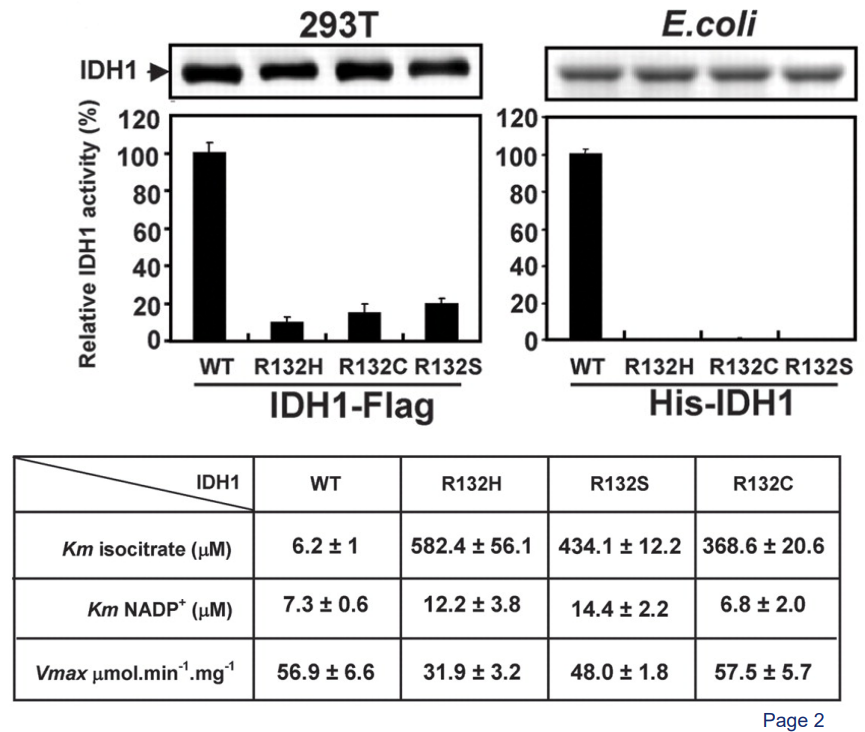
4 Cancer Cell Metabolism
In this week’s lecture, we study the relationship between the protein Ras and GTPases and also learn how Ras becomes activated to do its job. We also learn how Ras can cause cancer (i.e., how Ras can behave as a cancer promoter) and also how Ras looks like when stuck with GDP and GTP.
4.1 Metabolic Enzymes as an Anti-Cancer Drug Target
4.1.1 IDH1 Mutations
About 80% of grade II to III glioblastomas have a mutation in an enzyme called cytosolic isocitrate dehydrogenase 1 (i.e., IDH1). In this sort of mutation, an amino acid of the enzyme - Arginine 132 - gets mutated into histidine. This is called a R132H mutation.
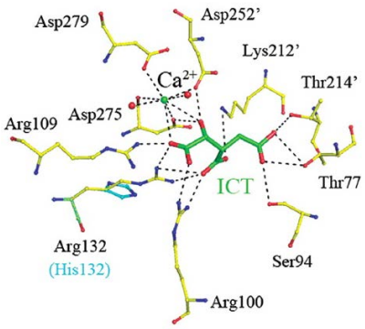
This R132H mutation makes it so that part of IDH1 called ICT cannot make ionic bonds between itself and IDH1 (i.e., the enzyme itself).
4.1.2 What Does IDH1 Do?
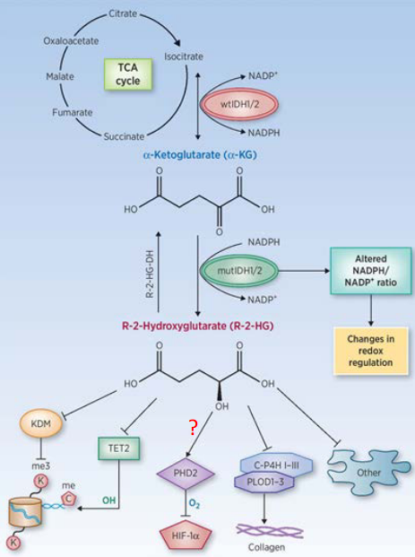
The normal or “wild type” form of IDH1 (or IDH2) help convert isocitrate - something made during the Krebs’ cycle - to something called alpha-ketoglutarate when it makes NADPH.
When these enzymes are mutated, they take alpha-ketoglutarate and turn it into a cancer-causing agent called R-2-HG and also consume NADPH in the process. This “R-2-HG” then goes onto inhibit proteins that come from the alpha-KG-dependent dioxygenase family.
4.1.3 A Closer Look at Mutant and Wild Type IDH1
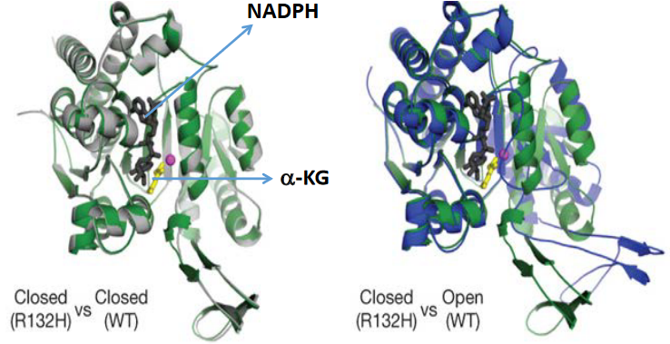
When IDH1 is mutated, it stays closed. This helps alpha-ketoglutarate bind to it as well.
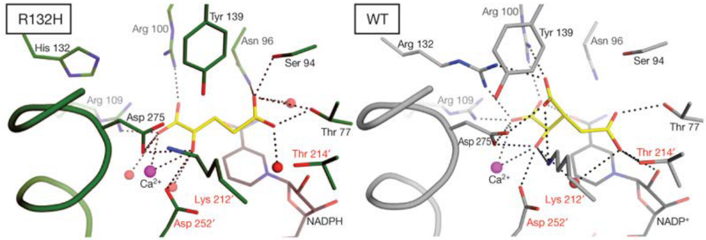
If we take a closer look at the wild type IDH1’s active site (i.e., on the right), the 132nd arginine (i.e., R) residue behaves like a hinge that helps the protein to change between its active and inactive (i.e., closed) form.
However, the R132H mutation makes it so that the protein wants to stay in a closed form, and this causes IDH1 to prefer binding to alpha-ketoglutarate and NADPH.
4.2 Signalling Mechanisms
4.2.1 Activating G-Proteins via GCPRs
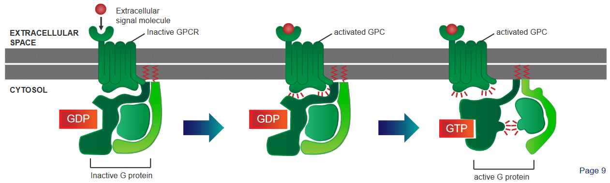
There are three steps:
A G protein - which is found in the cytoplasm - behaves like a sort of molecular switch. At this point, this switch is “off”.
When a signalling molecule binds to the G-Protein Coupled Receptor (i.e., GCPR), this causes the GCPR to change shape and become activated.
When something called GTP binds to the G protein, this causes the G protein to change shape (i.e., conformational change), and the \(\alpha\) portion of the receptor disassociates from the receptor and a part of it called the \(\beta\gamma\) complex. This is what activates cellular responses.
4.2.2 Activating Signalling Proteins via Receptor Tyrosine Kinases
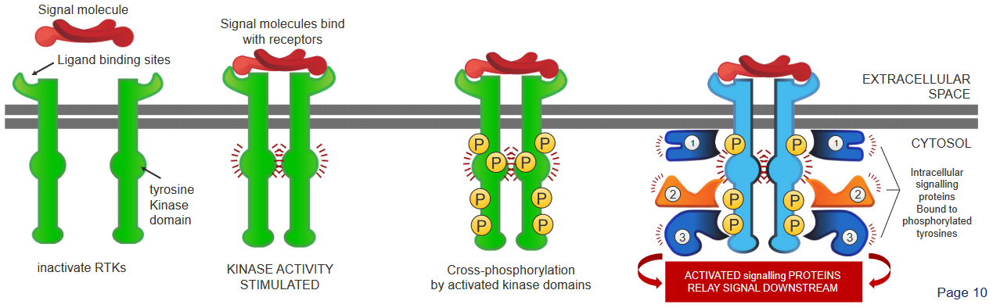
There are four steps:
- The Receptor Tyrosine Kinases (i.e., RTK) first appear as inactive, single units with a site for the ligands.
- When a signalling molecule binds to these sites, these RTKs then pair up or dimerzie.
- The kinase portions (i.e., domains) of the RTK pairs (i.e., dimers) then phosphorylate one another and boost each others’ activities. This phosphorylation affects other parts of the protein.
- These phosphorylated dimers then attract other signalling proteins and form a complex. This complex then helps send signals along multiple pathways.
4.3 The Ras Superfamily
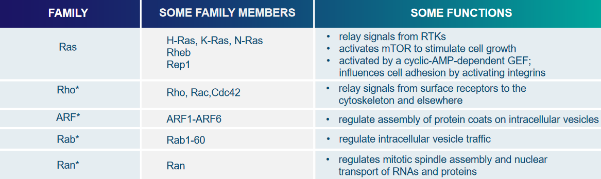
This superfamily (i.e., really big family) of proteins has all sorts of single units of GTPases, and two proteins called Rho and Ras help relay signals from cell surface receptors by interacting with various other signalling proteins.
The Ras protein helps affect things like cell proliferation, differentiation, and stopping Ras interactions with TRKs.
4.3.1 What is Ras?
Ras is really a family of related proteins belonging to something called the small GTPase class, which play an important role in transmitting signals within cells, a process known as cellular signal transduction. When Ras receives incoming signals and is “switched on,” it activates other proteins, ultimately triggering genes responsible for cell growth, differentiation, and survival.
Because of this, mutations in ras genes can lead to the production of permanently active Ras proteins, causing unintended and excessive signaling within the cell, even in the absence of incoming signals. Since these signals promote cell growth and division, this overactive Ras signaling can ultimately contribute to the development of cancer.
In humans, there are three Ras genes: HRas, KRas, and NRas, and they are among the most common oncogenes found in human cancer. Mutations that result in the permanent activation of Ras are present in approximately 20% to 25% of all human tumors and can be as high as 90% in specific types of cancer.
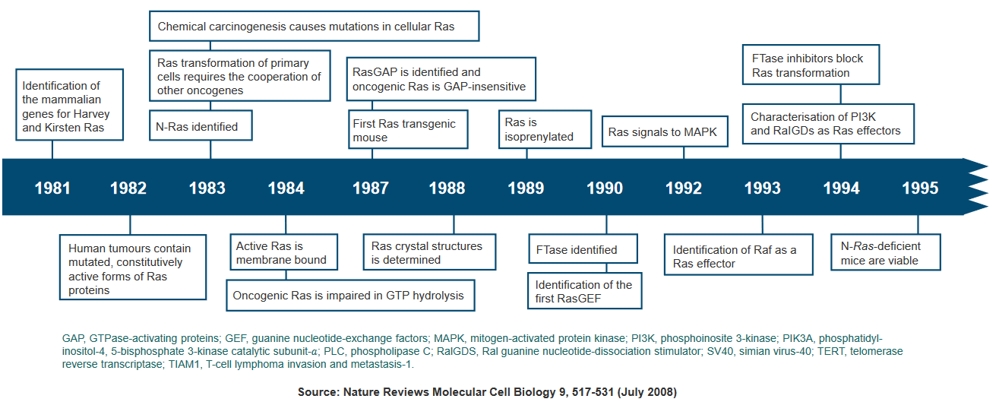
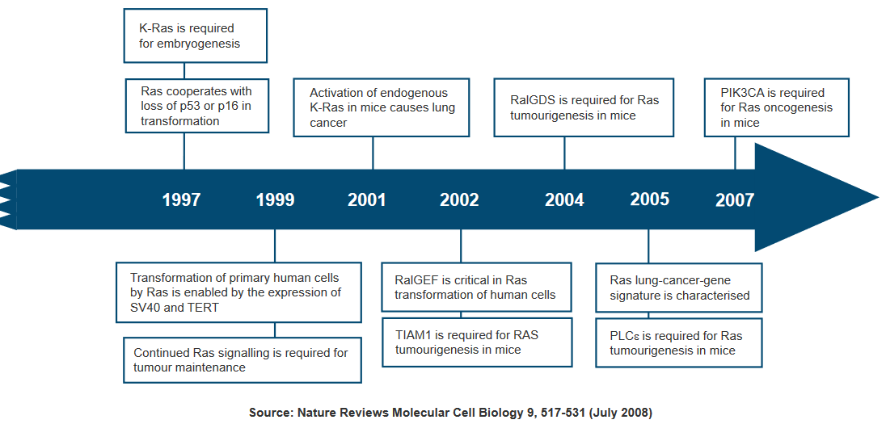
Due to the significant role Ras plays in cancer development, researchers are exploring Ras inhibitors as potential treatments for cancer and other diseases characterized by Ras overexpression. These inhibitors aim to target and suppress the overactive Ras signaling that drives tumor growth.
4.3.2 Activating Ras via RTKs and GEFs
4.3.2.1 Evidence from the Drosophilia Eye
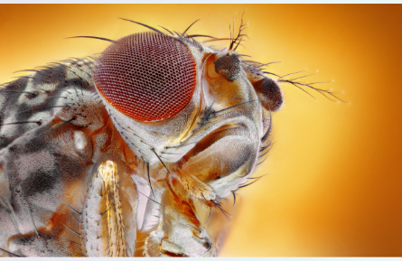
The Drosophila eye is a has about approximately 800 identical units. Each of these units has its own individual lens, which serves the purpose of focusing incoming light onto eight photoreceptor cells located at its base. This intricate organization allows for efficient light capture and perception within the Drosophila eye.
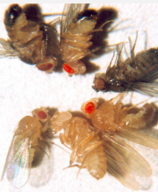
The photoreceptor cell called R7 is made for for detecting ultraviolet (UV) light nside a developing Drosophila eye. When this “R7” is absent, the fly loses its ability to see UV light, and this condition is referred to as Sevenless (i.e., Sev). The Sev gene encodes for an RTK, and mutations in this RTK gene block the development of R7. What’s weird is that in some flies, RTK remains functional, but R7 does not develop.
Further investigations into these mutants revealed that they carry mutations in the ligand of Sev, called Bride-of-sevenless (i.e., Boss), which is made by another photoreceptor cell known as R8.
Through genetic screening, researchers identified Ras as a component in the Sev signaling pathway. Mutations in either Sev or Ras resulted in the loss of R7. However, an important finding was that an overactive, mutated Ras could still induce the development of R7, even in the presence of mutations in Sev and Boss. This suggests that Ras acts downstream of Sev in the signaling pathway, and its activation in R7 precursor cells is both necessary and sufficient to trigger differentiate R7 photoreceptor cells.
4.3.2.2 How Sev’s RTK Activates Ras in the Eye of a Fly
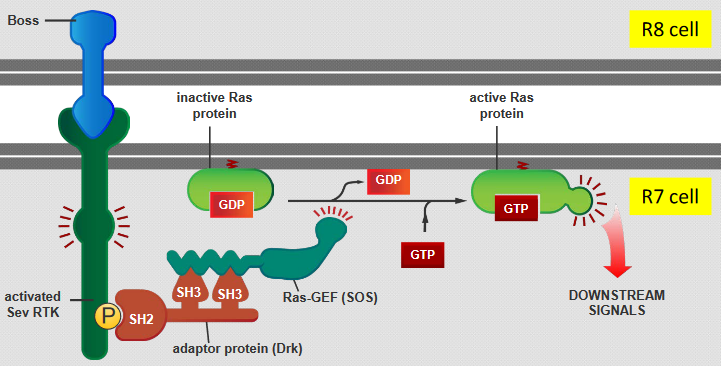
There are five steps:
- The Boss protein that is carried on the surface of the R8 cell binds with Sev RTK - the RTK encoded by the Sev gene - on the R7 cell’s surface.
- This binding then triggers a protein called Drk to activate another protein called Ras-GEF (SOS).
- This Drk protein also recognizes a specific phosphorylated tyrosine (i.e., pY) on the Sev RTK using its SH2 domain and interacts with Ras-GEF (SOS) through two SH3 domains.
- SOS activates the Ras protein by replacing GDP with GTP (in the Ras).
- The Ras is now ready to send off signals and set off a series of events inside the cell.
4.3.3 Activators of Ras
In mammals, RTKs can bind to Ras through an adaptor protein called Grb2, and this causes Ras to be activated.
Though, in some cases, the GEF of Ras can be activated even without needing RTKs. For example, this GEF can be activated using Ca2+ ions and something else called diacylglycerol - these two things help G-protein-linked receptors and activate Ras
4.3.4 Activating Ras Using a Single Molecule
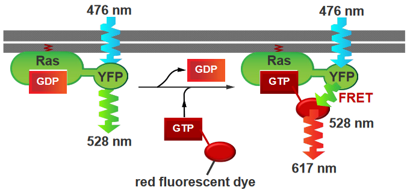
In this experiment, the Ras protein is has a yellow flourescent protein (i.e., YFP) attached to it, and GTP molecules that have been attached to red flourescent proteins (i.e., RFPs). The Ras was activated by the GTPs, and the YFP that was atttached to it was also activated (i.e., it is activated at wavelengths of 476 nm and emits light at 528 nm). On the other hand, the RFP emits light at about 617 nm.
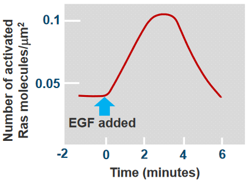
As we can see from the above plot, there’s a peak at somewhere around 3 to 4 minutes and the Ras was activated at around 30 seconds.
4.3.5 How do Ras Events Last for a Long Time?
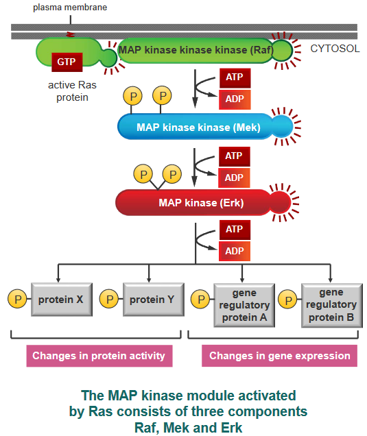
Ras is inactivated when the GTP that was bound to it gets hydrolyzed or turned into GDP. In this sense, the initial signals that Ras sends out don’t last very long, but the signals that they send out do last for a long time.
Something called a Mitogen-Activated Protein (i.e., MAP) module can form a group or module that is used in signalling in various events. When this “module” is active, the MAP kinase module then helps out by phosphorylating other proteins (including transcription regulators and other kinases as well).
4.3.6 Cancer-Causing Effects of Ras
When the DNA from a mutated Ras gene was put into a normal cell, researchers found that piece of DNA alone was not enough to make the cell cancerous. In fact, mutated and cancer-causing (i.e., oncogenic) Ras genes stop cell proliferation and don’t promote tumor formation. Though, what is interesting is that previously mutated cells (e.g., from viral proteins, carcinogens, and their like) could be made cancerous because of the mutated Ras gene.
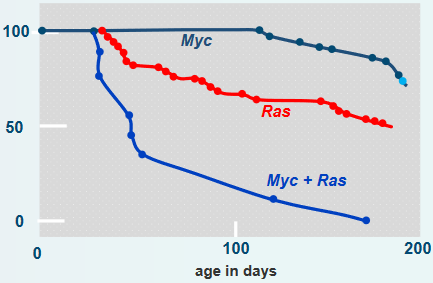
In the above graph, oncogenic DNA was introduced into mice. The mice with one or two oncogenes (i.e., cancer-causing genes) developed cancer slower. On the other hand, introducing the Myc and the Ras oncogenes into the mice more than doubled the rate at which these mice came down with tumors.
4.3.7 Embedding Ras into the Cell Membranes
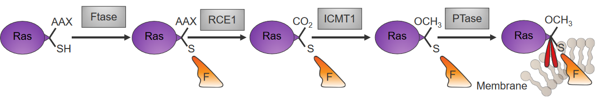
Something called farnesyl pyrophosphate (i.e., the stuff in orange in the above diagram) is attached to Ras that have been newly made in the cytoplasm by an enzyme called farnesyltransferase (i.e., Ftase).
Another enzyme called palmitoyltransferase (i.e., PTase) then attaches something called palmitoyl to the C-ending of the Ras’ cysteine residue, and this keeps the Ras stable in the membrane.
4.3.8 Enzymatic Activity of Ras
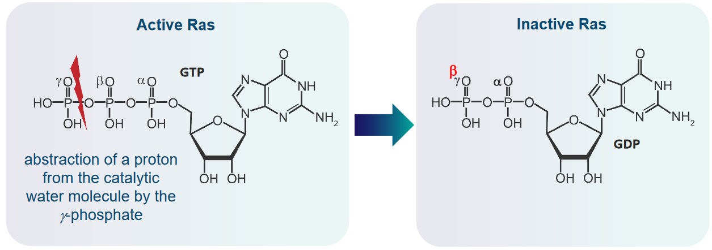
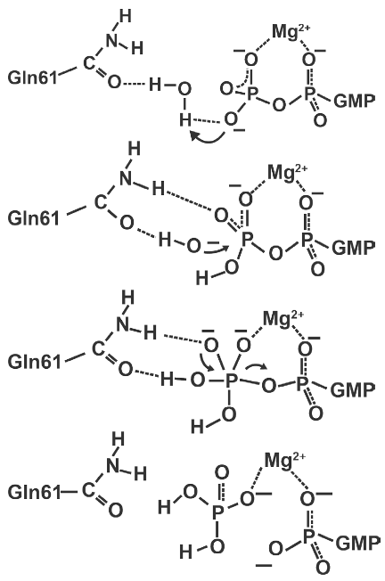
There are four steps to this:
- Ras takes a proton from a catalytic water molecule using its GTP molecule’s \(\gamma\)-phosphate
- The above step results in a nucleophilic hydroxide ion that then attacks the GTP’s \(\gamma\)-phosphate.
- This leads to the formation of an intermediate that has a sort of triangle pyramid shape.
- When GDP leaves in this reaction, this intermediate then decomposes down into GDP and phosphate.
4.3.8.1 Going from GDP-Ras to GTP-Ras
We know that the Ras protein binds to something called the Son of Sevenless (i.e., SOS) without any nucleotides.
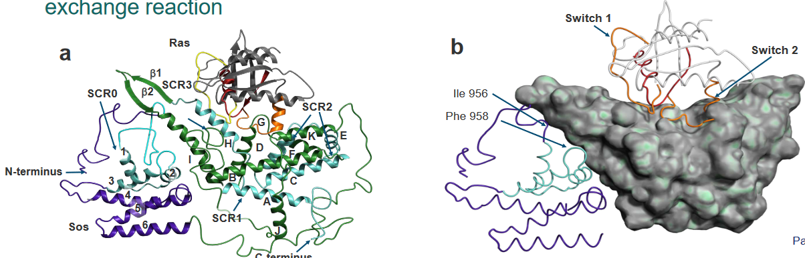
The Ras in the Ras-SOS complex is pretty much the same if you don’t mind the changes in the switches, the P-loop, and the Mg2+ binding region. However, there is a helix called “H” in the above diagram that is inserted within the Ras in the Ras-SOS complex.